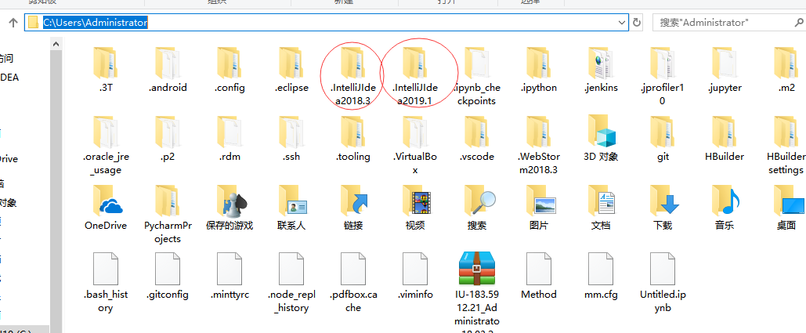
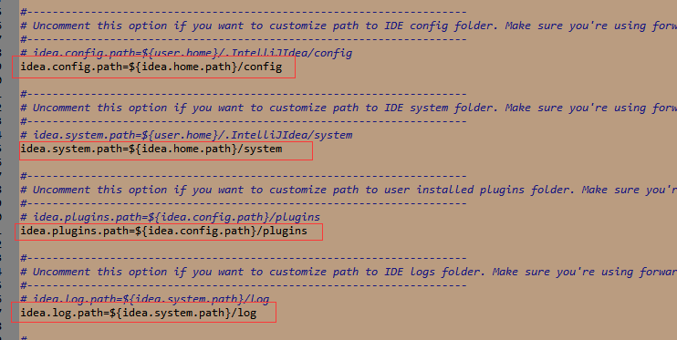
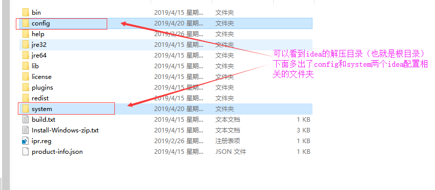

idea配置文件默认情况下是保存在系统当前用户的根目录下的，这一层目录比较深，不好找

所以最好修改为别的路径下，建议改为在idea安装目录下
在idea安装目录的bin文件夹中找到idea.properties文件，修改如下：
 
最后补充一下：修改idea配置文件存放位置最好是在刚解压完idea压缩包，还没启动idea的时候去改。而且如果要将idea“恢复出厂配置”，只需要将config和system两个文件夹删掉即可